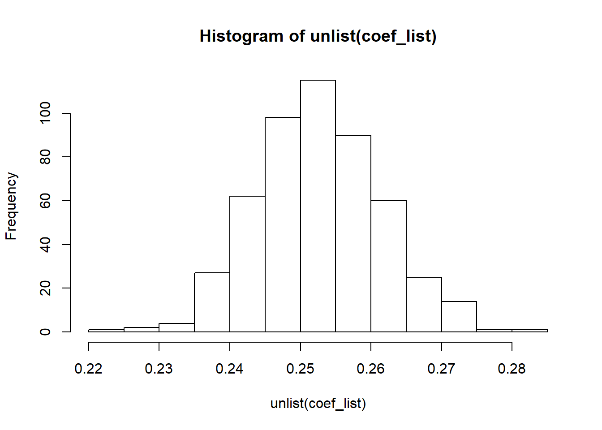

Came across a fun little problem over the past few weeks that is related to the topic of policy impact evaluation - a long time interest of mine! Here’s the setting: we have a large population of individuals and a number of treatments that we want to gauge the effectiveness of. The treatments are not necessarily the same but are targeted towards certain sub-segments in the population. Examples of such situations include online ad targeting or marketing campaigns. This gives rise to the following 3 methods of selecting the treatment and control groups:
Apply the targeting rule to get a population subset. Split this group into treatment and control, run the treatment and collect the results. In the next time period, keep those which remain in the control as the control and top up the group with a random sample to maintain a similar proportion of treated and control individuals.
Randomly split the population into treatment and control. For each period, do not vary the control group. Just administer the treatment on the treatment group. Evaluate the effectiveness of each period on the control group applying the targeting rule to subset the relevant control population.
For each period and campaign, apply the targeting rule and randomise the group into treatment and control.
Framework
Would these methods give equivalent results? I will use the Neyman-Rubin causal framework to formalise the intended goal and outcomes. Let \(Y_{i}\) denote the outcome of an individual (e.g. total spending). The fundamental problem of inference is that one would never be able to observe the spending of an individual if he was administered the treatment \(Y_{1i}\) or if he was not \(Y_{0i}\). Here, \(Y_{1i}\) and \(Y_{0i}\) are referred to as potential outcomes as only one outcome can be observed but not the other.
The average effect of a treatment on an individual is given by: \[ E[Y_{1i} - Y_{0i}] \]
Let \(D_{i}=1\) denote being treated and \(D_{i}=0\) being not treated. We can look at the difference in average outcomes based on treatment status: \[ E[Y_{i} \vert D_{i}=1] - E[Y_{i} \vert D_{i}=0] = E[Y_{1i} \vert D_{i}=1] - E[Y_{0i} \vert D_{i}=0] \]
If the treatment is not randomly assigned (e.g. people can choose to take-up the treatment), the above expression can be written as: \[ \begin{aligned} E[Y_{i} \vert D_{i}=1] - E[Y_{i} \vert D_{i}=0] &= E[Y_{1i} \vert D_{i}=1] - E[Y_{0i} \vert D_{i}=1] \\ &+ E[Y_{0i} \vert D_{i}=1] - E[Y_{0i} \vert D_{i}=0] \end{aligned} \] The first term on the right is the average treatment effect on treated while the second is the selection bias. For example, if the advertisement has a positive impact on spending then we would expect the second term to be positive leading to an upward bias in its estimated effect.
And that’s precisely why to evaluate the effectiveness of a treatment, we have to randomise people into treatment and control groups. Under randomisation, the potential outcomes are independent of the treatment1, \[ \{Y_{1i}, Y_{0i}\} \perp D_{i} \] and
\[ E[Y_{1i} \vert D_{i}=1] - E[Y_{0i} \vert D_{i}=0] = E[Y_{1i} - Y_{0i}] \] This implies that taking the difference between the average across the treated and control group will give us the Average Treatment Effect (ATE). In many situations, we relax the assumption by only allowing the mean of non-treated individuals to be independent of treatment status:
\[ E[Y_{1i} \vert D_{i}=1] - E[Y_{0i} \vert D_{i}=0] = E[Y_{1i} - Y_{0i} \vert D_{i}=1] \] This gives the Average Treatment on Treated (ATT).
Thought Experiment
To consider the various scenarios outlined above, let me setup a little thought experiment. In my world, there are two types of customers, high type or low type, which I denote by \(X_{i}\). Low type customers, \(X_{i} = L\), spend \(\alpha + \epsilon_{it}\) dollars while high type customers, \(X_{i} = H\), spend \(\alpha + \beta + \epsilon_{it}\) dollars, where \(\epsilon_{it}\) is a drawn from a normal distribution. The treatment of interest is a marketing promotion which is targeted at high spending individuals. Assume low type customers are not affected by the marketing promotion while high type customers have a \(p\%\) probability of spending an additional \(\delta\) dollars which persist for the rest of the periods. Having taken up the treatment, the high type individual will no longer subscribe to future promotions. I ignore any changes in spending across time periods, though in practice one way to account for such changes is to consider the first difference.
Simulation Setup
To check on the effectiveness of the 3 methods of selecting a control group, let’s do a little simulation with the following parameters: \[ \begin{aligned} \alpha &= 3, \\ \beta &=2, \\ \delta &=1, \\ p &=0.3, \\ \epsilon_{it} &\sim N(0,1) ~\forall i \end{aligned} \]
To start, let’s build a 3 period model with 100,000 people in the population (half high type and half low type). I consider observations in 3 period, \(t=1,2,3\) and split the population into 80% treatment and 20% control. The treatment is targeted towards higher spending individuals. However, one cannot observe the underlying type distribution and has to segment the population by the amount which they spend. In the simulation, I use a spending rule (\(Y_{i} > 4\)), which covers approximately 50% of the initial population.
n= 1e5
p = 0.3
d = 1
df = data.frame(ind = seq(1, n),
type = rep(c(0,1), n/2),
epsilon = rnorm(n, 0, 1),
unif = runif(n, 0, 1),
unif2 = runif(n, 0, 1))
df$spend = ifelse(df$type==0, 3, 5) + df$epsilon
### Select treatment and control using unif
df$target = ifelse(df$spend>4 , 1, 0)
df$treat = ifelse(df$target==1 & df$unif<0.8, 1, 0)
df$control = ifelse(df$target==1 & df$unif>=0.8, 1, 0)ATT
Despite covering 50% of the population, randomness in spending patterns implies that the target group would still consist of both low and high types. This means that the outcome of our experiment would only yield an ATT effect, or the effect on the sub-population who spend more than 4. Let us calculate this effect before using the simulation to verify the results. We are interested in finding the fraction of population who are high type conditional on spending more than 4. First, let us calculate the probability that a high and low type individual spend more than 4 using r’s pnorm function before calculating the conditional probability:
1-pnorm(4, 3, 1)## [1] 0.15865531-pnorm(4, 5, 1)## [1] 0.8413447\[ \begin{aligned} P(X_{i}=H \vert Y_{i}>4) &= \frac{P(X_{i}=H, Y_{i}>4)}{P(Y_{i} >4)} \\ &= \frac{0.841*0.5}{0.159*0.5 + 0.841 *0.5} \\ &= 0.841 \end{aligned} \] Since only 0.841 of the sub-population would be affected by the treatment, we would expect that the average treatment effect would be \(0.841*0.3 = 0.25\%\)
### Add in treatment effect to treated
df$delta = ifelse(df$treat==1 & df$type==1 & runif(n, 0, 1)<=p, d, 0)
df$spend2 = df$delta + df$spend
### Average treatment effect on treated
df_subset = df[df$target==1,]
mean(df[df$treat==1,]$spend2) - mean(df[df$control==1,]$spend2)## [1] 0.2534045lm(spend2 ~ treat, data=df_subset)##
## Call:
## lm(formula = spend2 ~ treat, data = df_subset)
##
## Coefficients:
## (Intercept) treat
## 5.1672 0.2534More generally, a better approach to check our result would be to loop over many random samples and find the central tendency of the parameter estimate:
att <- function(n=1e5, p=0.3, d=1){
df = data.frame(ind = seq(1, n),
type = rep(c(0,1), n/2),
epsilon = rnorm(n, 0, 1),
unif = runif(n, 0, 1),
unif2 = runif(n, 0, 1))
df$spend = ifelse(df$type==0, 3, 5) + df$epsilon
### Select treatment and control using unif
df$target = ifelse(df$spend>4 , 1, 0)
df$treat = ifelse(df$target==1 & df$unif<0.8, 1, 0)
df$control = ifelse(df$target==1 & df$unif>=0.8, 1, 0)
### Add in treatment effect to treated
df$delta = ifelse(df$treat==1 & df$type==1 & runif(n, 0, 1)<=p, d, 0)
df$spend2 = df$delta + df$spend
### Average treatment effect on treated
df_subset = df[df$target==1,]
mean(df[df$treat==1,]$spend2) - mean(df[df$control==1,]$spend2)
mod <- lm(spend2 ~ treat, data=df_subset)
return(coef(mod)["treat"])
}
B = 500
coef_list = list()
for(b in 1:B){
coef_list[[b]] <- att()
}
hist(unlist(coef_list))
mean(unlist(coef_list))## [1] 0.2526948Unsurprisingly, the empirical results tally with our mathematical derivation.
2nd period ATT
Now, we are ready to evaluate the various proposed control groups. To keep things simple, the 2nd marketing promotion will be the same as the first and target individuals who spend above 4. However, this time to evaluate the results we need to consider 3 groups - low type, high type takers and high type non-takers - where takers and non-takers refer to whether they responded positively to the treatment in the first period. Repeating the above calculations and focusing on the share of non-takers in the sub-population: \[ \begin{aligned} P(X_{i,t=2}=H_{nt} \vert Y_{i,t=2}>4) &= P(X_{i,t=2}=H_{nt} \vert Y_{i,t=2}>4, i \in treated_{t=1}) + P(X_{i,t=2}=H_{nt} \vert Y_{i,t=2}>4, i \in control_{t=1})\\ &=\frac{P(X_{i,t=2}=H_{nt}, Y_{i,t=2}>4)}{P(Y_{i,t=2} >4)}*0.8 + 0.841*0.2 \\ &= \frac{0.841*0.5*0.7}{0.159*0.5 + 0.841 *0.5*0.7 + + 0.841 *0.5*0.3} *0.8 + 0.841*0.2\\ &= 0.639 \\ \\ ATT_{t=2} &= 0.639*0.3 \\ &= 0.192 \end{aligned} \] The calculations make intuitive sense. With a smaller pool of customers who would respond positively to the treatment, the ATT in the second period is lower than the first.
Targeting rule with top-up
Here’s a few lines of code to implement the idea of trying to keep the members of the control group relatively similar and do a random top-up where necessary.
### 2nd time period
df$target2 = ifelse(df$spend2>4, 1, 0)
n_control2 = round(sum(df$target2) * 0.2)
n_control_remain = sum(df$target2 & df$control==1)
unif_threshold = (n_control2 - n_control_remain) / (sum(df$target2) - n_control_remain)
df$control2 = ifelse(df$target2==1 & (df$control==1 | df$unif2<=unif_threshold), 1, 0)
### Approximately fill up
df$treat2 = ifelse(df$target2==1 & df$control2==0, 1, 0)
df$delta2 = ifelse(df$treat2==1 & df$type==1 & df$delta==0 & runif(n, 0, 1)<=p, d, 0)
df$spend3 = df$delta2 + df$spend2 + rnorm(n,0,1)
### Average treatment effect 2 (Less than predicted!)
df_subset2 = df[df$target2==1,]
lm(spend3 ~ treat2, data=df_subset2)I show the results from 500 runs of the above code extracting the coefficient of the supposed treatment effect as well as the proportion of high non-treated individuals from the treatment and control group.
mean(unlist(coef_list))## [1] 0.4276794mean(unlist(prop_control_list))## [1] 0.8404415mean(unlist(prop_treat_list))## [1] 0.5890693Notice that the proportion of high non-treated individuals are no longer the same across the groups and the estimated effect is much larger than the calculated value. Almost no one has been treated in the control group. This leads to an upwards bias in the estimated treatment effect since the coefficient estimate is combining the effect of both the first and second treatment together.
More generally, the extent and direction of bias cannot be so easily quantified. If one allows the spending amounts to have a component that evolves randomly across time, it is possible for the estimate to be smaller than its actual value.2
Additional Thoughts
Method 2 of having a universal control group is actually a special case of the above problem, where the control group does not vary at all. Under the assumption that each treatment would have a positive effect, the estimated effect for each subsequent treatment would always be overstated.
Only method 3 would give us a sensible result across both periods of the treatment. Here’s a fun little exercise - try to implement a random sample on the second period after subsetting the population using the targeting rule. Do you get a result similar to the calculated ATT above?
TL;DR
In short, when it comes to choosing a random control group in a policy evaluation setting with multiple treatments and periods, the best option is the simplest one. Random assignment always works, no need to over complicate things.